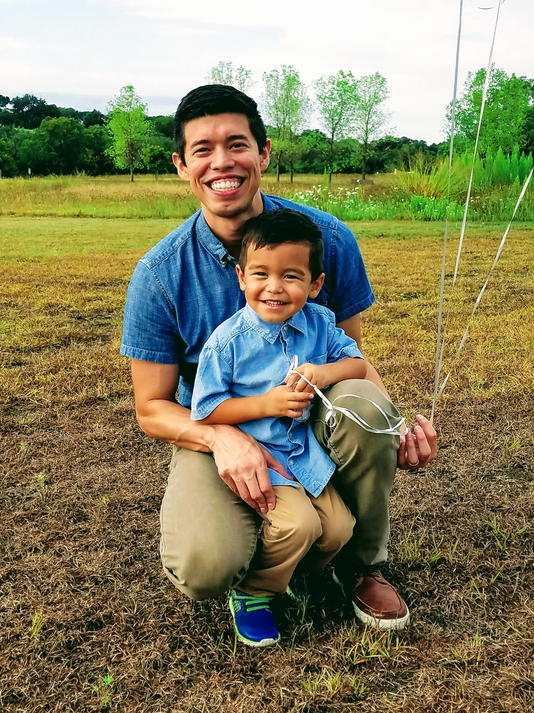
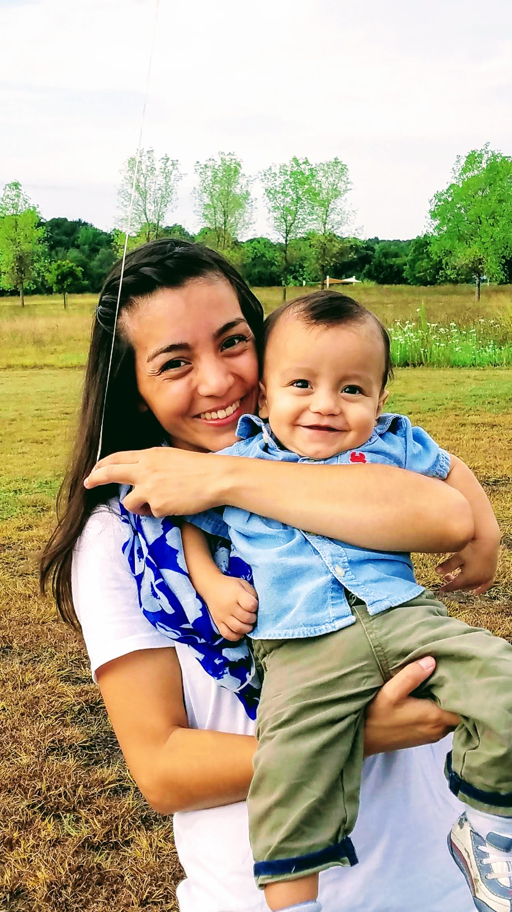

- First Name
- Last Name
- Job Title
- Home Office
- Tell Me More
Luis (Preferred Name: Michael)
I graduated from the University of Texas at Austin, with an undergraduate and masters degree in Accounting. The past four years, I have worked in public accounting and corporate accounting. Early in my career, I sought to remove the manual processes which could be automated through excel formulas. As I challenged myself to learn more about the potential of excel, I was exposed to software engineering articles. The potential of building and expanding processes through coding captured my interest quickly. Now, it has become a desired skill that has been enjoyable to learn.
I have two sons and a lovely wife. We enjoy doing outdoor activities, such as running and visting parks. My sons are my pride and motivate me to strive for new goals.

